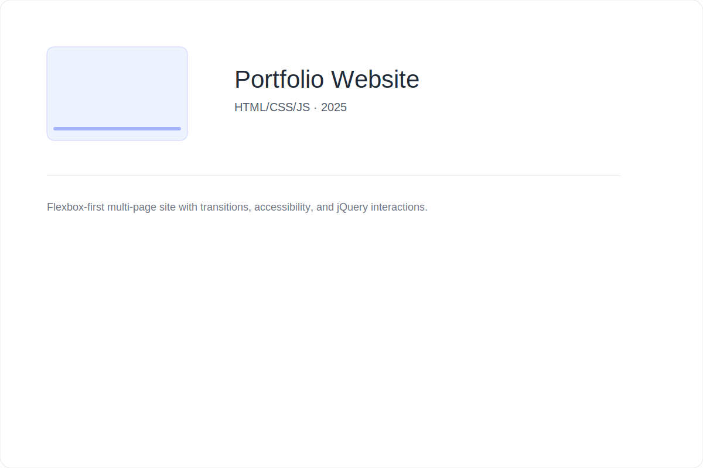

Flexbox-first multi-page portfolio built with accessibility and lightweight interactions. Includes smooth transitions, semantic markup, and progressive enhancement.
Highlights
- Accessible navigation and focus states
- Responsive layout using Flexbox / Grid
- Performance-minded images and simple JS enhancements